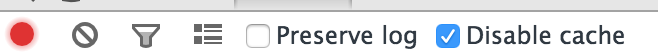
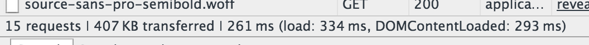
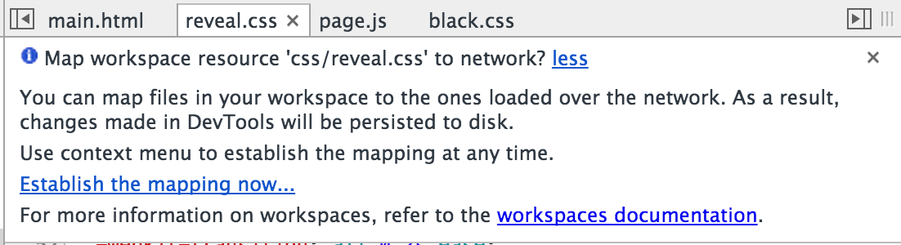
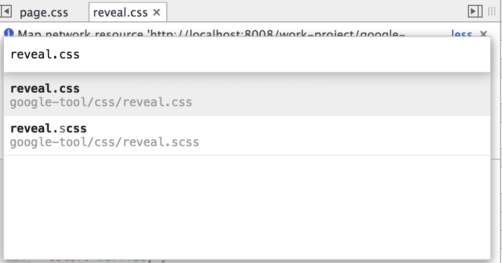
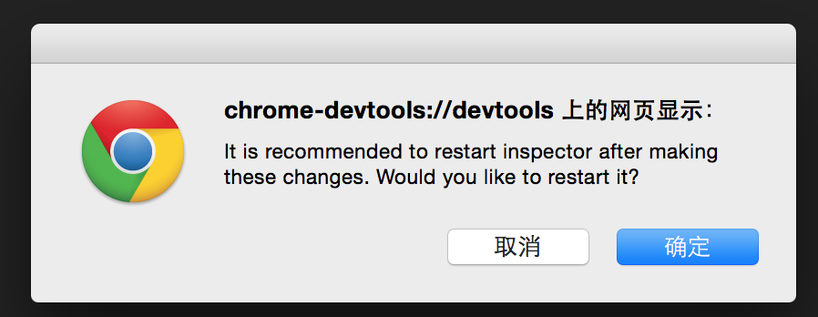
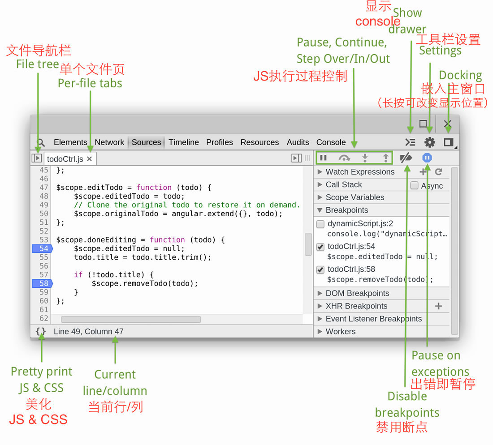
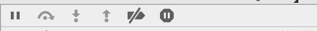
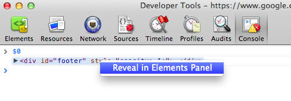
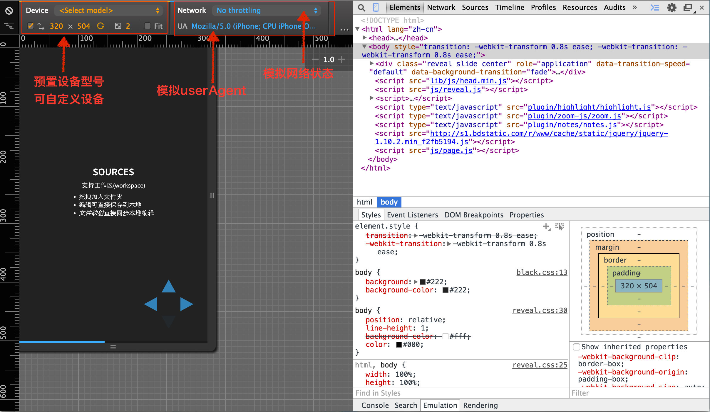
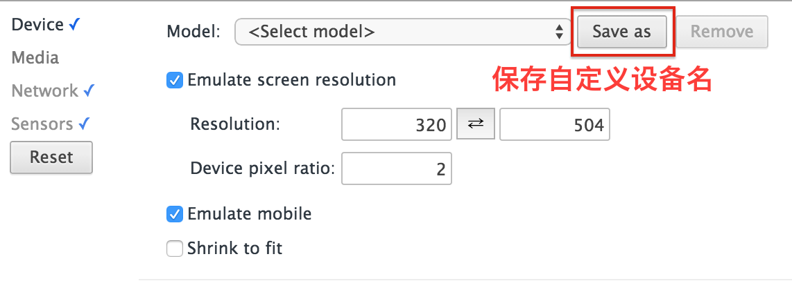

Google开发者工具
Google Developer Tool
By virola
如何启用
- 右键 —> 审查元素
ctrl+shift+IF12- 菜单键 —> 更多工具 —> 开发者工具
功能列表
Elements
DOM操作和样式修改
Elements
- Tab定位值
- 盒模型计算
- 颜色拾色器
- 禁用CSS属性,新建CSS规则
- JS/CSS历史版本 (History面板)
Elements
- 常用DOM操作
(右键, Enter, Tab, 上下左右) - 设置DOM状态
(:active/:hover/:focus/:visited) - 修改tagName, 属性, 值
- 修改HTML
- 查看事件绑定
- 设置断点监听DOM修改
Elements
当CSS属性值是数字类型时，可用快捷键增加/减少数值：
- Up 或者 Down 增加/减少 1
- Alt + Up/Down 增加/减少 0.1
- Shift + Up/Down 或者 PageUp / PageDown 增加/减少 10
- Shift + PageUp / PageDown 增加/减少 100
Network
监控网络请求
Network
- 跟踪重定向
- 查看HTTP请求
- 查看文档加载时间
- 各元素的加载时间轴
Network
Overview

Network

- 停止监听请求
- 清空所有记录
- 筛选请求
- 文件名关键词查找
- 文件类型筛选
- 显示详细列表
- 是否保留请求日志（刷新页面不清空）
- 是否禁用缓存（禁用浏览器缓存）
Network

- 请求数 (13 requests)
- 总传输大小 (382 KB)
- 加载时间 (228 ms)
- 总加载时间: load
- DOM加载时间: DOMContentLoaded
Network - 网络请求列表
- 文件名（文件路径）
- 请求方法（GET/POST）
- 请求状态
- 200: 成功
- 304: 缓存
- 500: 服务器错误
- 文件类型
- 发起请求的对象
- 请求大小（文件内容大小）
- 请求时长（等待时长）
Sources
源码调试-最主要的工具
Sources
三栏布局
- 导航栏
- 代码编辑区
- 代码调试区
Sources
支持工作区(workspace)
- 拖拽加入文件夹
- 编辑可直接保存到本地
- 文件映射直接同步本地编辑
Sources
建立本地文件映射
Sources
映射方法
Step: 1 添加文件夹
- 方法一：拖拽文件夹到 "Sources" 面板
- 方法二：右键点击导航栏, "Add Folder to Workspace"
Sources
映射方法
Step: 2 稍等片刻

点击 "Establish the mapping now..."
Sources
映射方法
Step: 3
选择要映射的对应文件
Sources
映射方法
Step: 4
点"确定"，完成。
Sources
取消映射
- 在导航栏中右键点击文件夹
- "Remove Folder from Workspace"
(从工作区移除文件夹) - 确认后，刷新网页
Sources
JS源码调试

Sources
- 点击行号设置断点
- 调试区观察变量
- 配合Console输出
Sources
调试区的 过程控制 工具

- 暂停所有脚本执行
(F8) - 跳过下一个函数执行
(F10) - 进入当前函数执行
(F11) - 跳出当前函数执行
(shift + F11) - 是否激活断点
（点亮时断点运行不会暂停） - 是否在所有exception处暂停
（错误追踪，脚本出错时暂停JS执行）
Resources
资源管理面板
Resources
Resources
框架 Frames

Console
控制台 - 记录诊断信息
Console API
console.logconsole.warnconsole.error- More...
console.log('the current time is:', Date.now());
console.log('%c格式化%c日志\n %c换行文字', 'font-size:16px', 'color:red', 'background:#000;color:#fff');
Console 其他技巧
- 右键： Log XMLHTTPRequests
- 是否在console面板中显示ajax请求 - 编写多行代码: Shift + Enter 换行
console.table格式化数组显示console.table([{a:1, b:2, c:3}, {a:"foo", b:false, c:undefined}]); console.table([[1,2,3], [2,3,4]]);- 定位console中的DOM位置

Emulation
设备调试
Emulation

Emulation
自定义设备 - Emulation面板

Emulation
移动网速调试技巧
- 选择模拟的网络状态
- 配合打开Network面板
- 查看整个网页以及各个元素的加载时间
- 针对加载时间较长的元素进行优化
- 优化图片大小
- 压缩JS/CSS
- ...